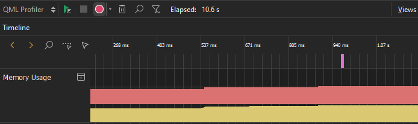
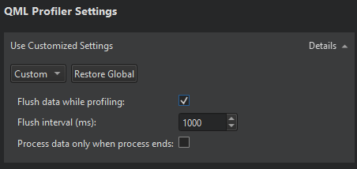
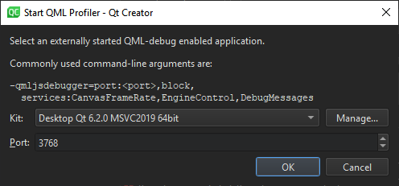

Profile QML applications
With QML Profiler, you can find causes for typical performance problems in your applications, such as slowness and unresponsive, stuttering user interfaces.
To collect data about a QML application:
- Set up QML debugging for the project. For more information, see Setting Up QML Debugging.
- In the Projects mode, select a kit with Qt version 4.7.4 or later.
Note: To profile applications on devices, you must install Qt libraries on them.
- Go to Analyze > QML Profiler to profile the current application.

- Select (Start) to start the application from QML Profiler.
QML Profiler immediately begins to collect data, as indicated by the time running in the Elapsed field.
Note: If data collection does not start automatically, select  (Enable Profiling).
(Enable Profiling).
Data is collected until you select (Disable Profiling). Data collection takes time, so expect a delay before seeing data.
Do not use application commands to exit the application because data is sent to QML Profiler when you select . The application stops in seconds. If you exit the application, the data is not sent.
Select Disable Profiling to disable the automatic start of the data collection when an application is launched. Data collection starts when you select the button again.
Save and load data
To save all the collected data in the .qzt format, go to Analyze > QML Profiler Options and select Save QML Trace.
To view the saved data, select Load QML Trace.
You can also deliver .qzt files to others for examination or load files that you receive from them.
Flush data while profiling
Set data flushing preferences either globally for all projects or separately for each project.
To set global preferences, go to Preferences > Analyzer > QML Profiler.
To specify custom QML Profiler settings for a particular project:
- Go to Projects > Run Settings.
- In QML Profiler Settings, select Custom.

You can set the following preferences:
| Setting | Value |
|---|---|
| Flush data while profiling | Flush the data periodically instead of flushing all data when profiling stops. This saves memory on the target device and shortens the wait between the profiling being stopped and the data being displayed. |
| Flush interval | Set the flush interval in milliseconds. The shorter the interval, the more often the data is flushed. The longer the interval, the more data has to be buffered in the target application, potentially wasting memory. However, the flushing itself takes time, which can distort the profiling results. |
| Process data only when process ends | Aggregate data from many QML engines into one trace. Otherwise, the profiling stops when one of the engines stops. |
To restore the global settings for the project, select Restore Global.
Attach to a running Qt Quick application
You can profile a Qt Quick application that you do not run from Qt Creator. However, you must enable QML debugging and profiling for the application in the project build settings. For more information, see Setting Up QML Debugging.
To attach to a waiting application:
- Go to Analyze > QML Profiler (Attach to Waiting Application).

- In Kit, select the kit used to build the application.
- In Port, specify the port to listen to.
- Select OK.
See also Profiling QML applications, How To: Analyze, Analyzers, and Analyzing Code.